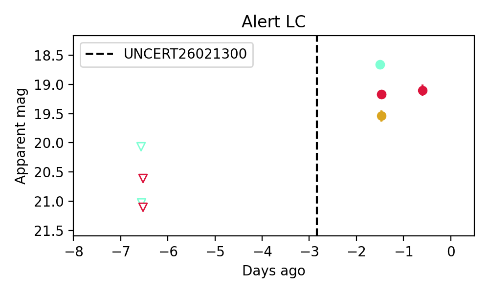

PS1: 0 sources in 3 arcsec LegacySurvey: 1 sources in 3 arcsec Closest: d = 1.79 arcsec, 131.6 deg (east of north) photoz=0.3 (68% bounds 0.2, 0.49), type=DEV peak abs mag = -22.34 (68% bounds -21.39, -23.63)

Extinction-corrected gr color: From alerts: -0.54 +/- 0.04 mag Extinction-corrected gi color: From alerts: -0.92 +/- 0.1 mag Extinction-corrected ri color: From alerts: -0.39 +/- 0.1 mag